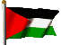

Page Information
Palestine Online
|
Go to random site
Reset current site
About Palestine Online


Palestine Online
This is a curated archive of websites created by Palestinians or about Palestine from the late 90s to early 2000s. The archive locates the history of the web as an important tool for Palestinian connection, expression, self determination, and resistance.
Created by Amad Ansari.
Special thanks to Sara bin Safwan, Zainab Hassoon, Todd Anderson, Saad Khan, Gufran Jadalla, and Zainab Aliyu for opportunities and guidance which have been integral for this project to flourish.